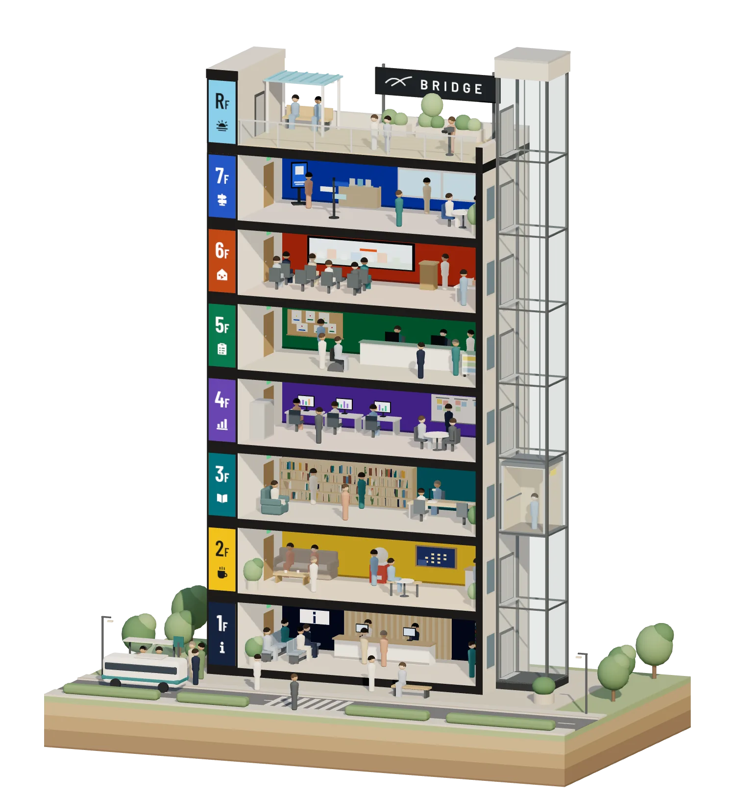
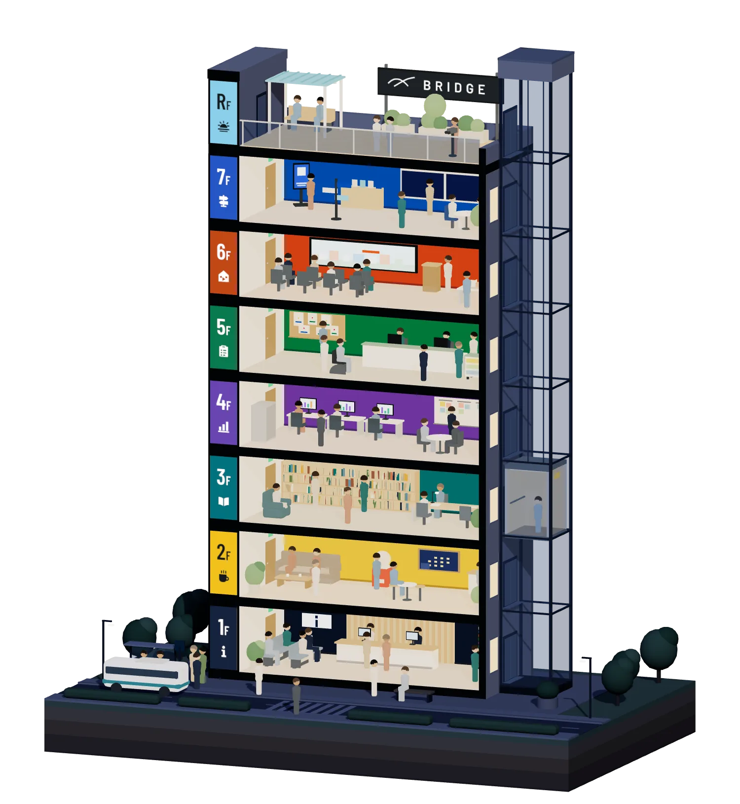
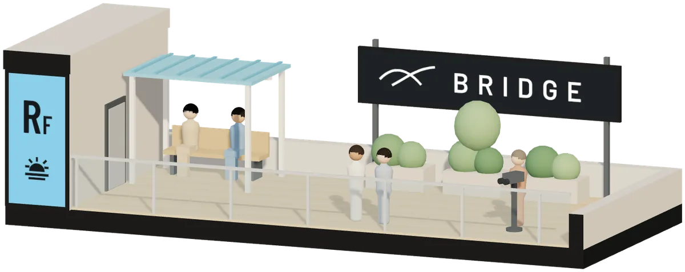
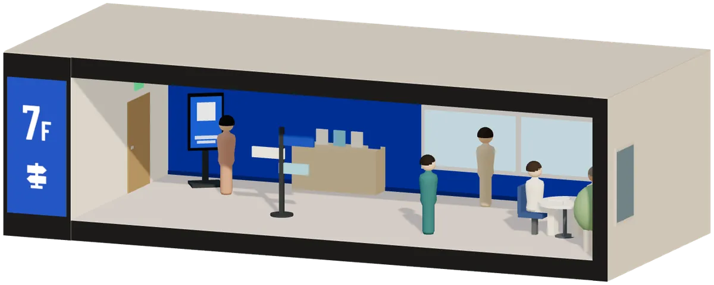
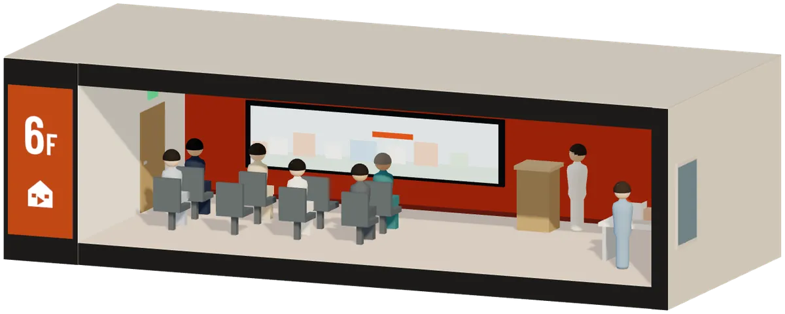
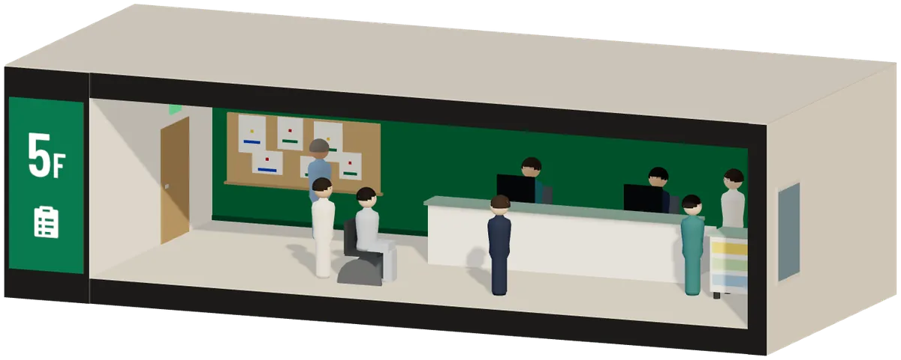
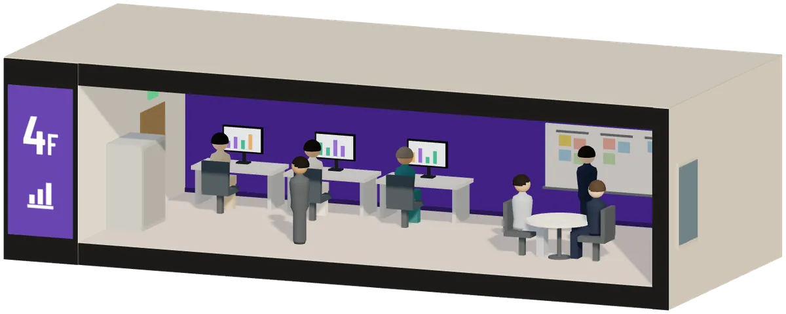
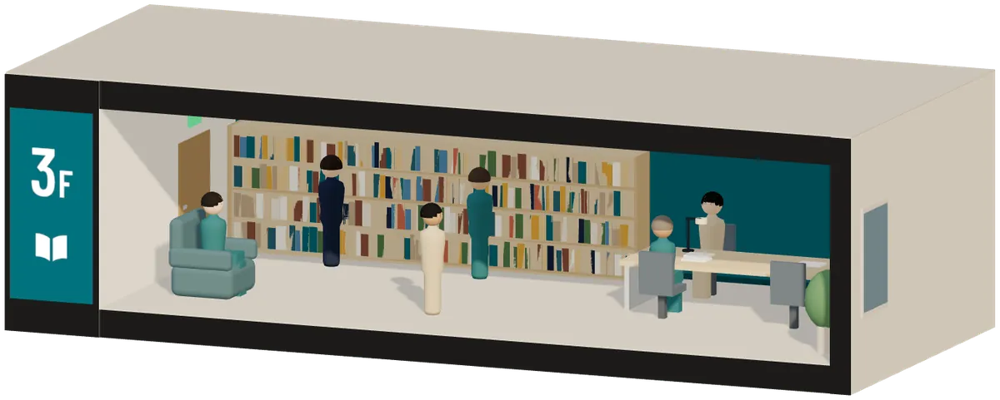
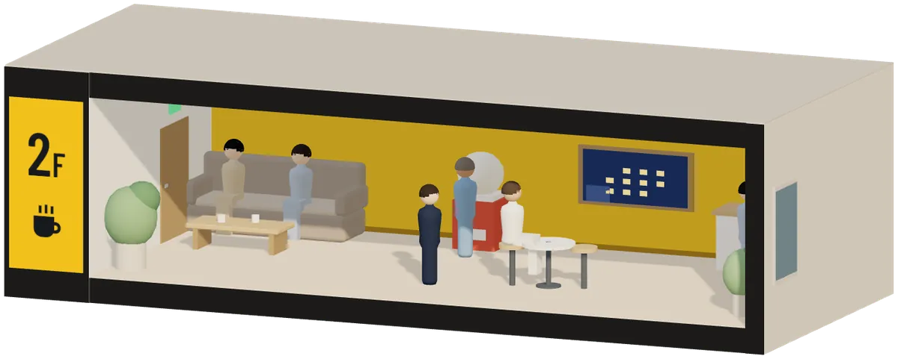
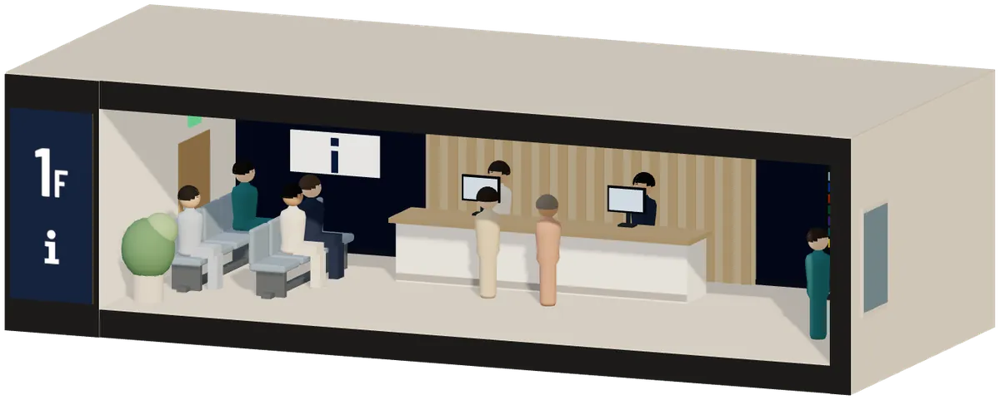

医療職のための、道具と経営ゲーム
いつもの病院に、まだ行ったことのない階がある
明日の業務から、キャリアの整理、経営の学びまで。6つの階に、29室あります。
701BRIDGE Compass をはじめる10の質問・約3分・登録不要

病院のビルを正面から切った断面の絵。左の柱に1階から屋上までの階の札、各階に小さな人が働く部屋、右にガラスのエレベーター。
考え方
Rooftop ・ Philosophy

正解を与えるのではなく、
選択肢を増やす
キャリア
Career
キャリア・経験を整理する ・ 7室

案内端末 ・ 実際の画面
経営を学ぶ
Learn Management
医療経営を学ぶ ・ 3室

スクリーン ・ 実際のゲーム画面
業務
Daily Work
明日の業務を楽にする ・ 3室

501 掲示じたくで、そのまま貼れるA4の掲示
経営・管理
Management
経営・管理の実務に使う ・ 9室

案内ディスプレイ ・ 実際の画面
- 401RehaBoardリハ部門の運営を、1画面に紹介とデモ
- 402MedBoard外来の患者フローを、2施設で見比べる紹介とデモ
- 403HireBoard医療機関の採用を、カンバンで追う紹介とデモ
- 404面接官の手帖面接の質問を用意し、事実と印象を分けて記録する紹介
- 405ConsultSim1診と2診で、待ち時間がどう変わるかを試す紹介とデモ
- 406本部長の巡回手帖複数施設の巡回を、1冊の手帖にアプリ
- 407医療管理職スターター初めて管理職になった人の、チェックリストと記入式シートアプリ
- 408医療管理実務ライブラリ医療管理の実務手順と、無料テンプレート記事とテンプレート
- 409Reha Checklistリハ部門KPIのチェックリスト(PDF・スプレッドシート)配布ページ(別のサイト)
学習
Study
学習を続ける ・ 3室

案内ディスプレイ ・ 実際の画面
試す・作品
Try & Enjoy
気軽に試す・作品を楽しむ ・ 4室

総合案内
Information
6つの階に、ぜんぶで29室

運営者
理学療法士 橋本渉
BRIDGE を、ひとりで運営しています
理学療法士 橋本渉
BRIDGE を、ひとりで運営しています
外に出てみると、病院で当たり前にやっていた調整や記録が、別の場所では別の名前で呼ばれていました。
出入口見るだけで帰っても、それで十分です。